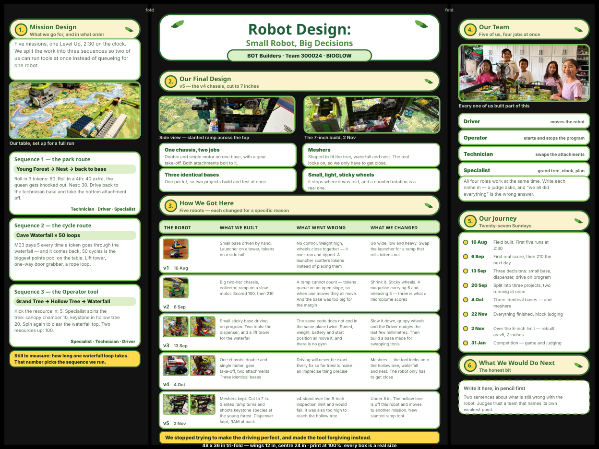
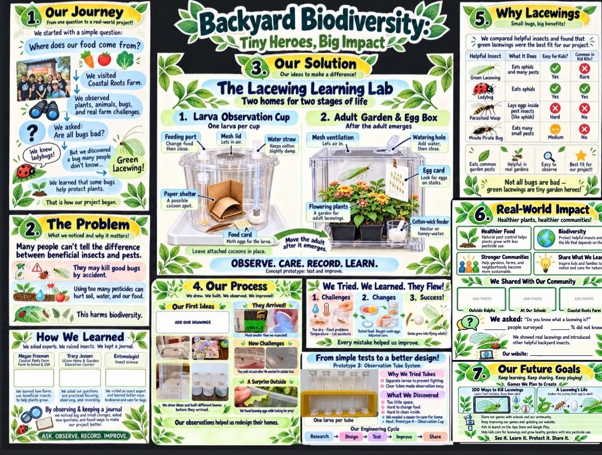
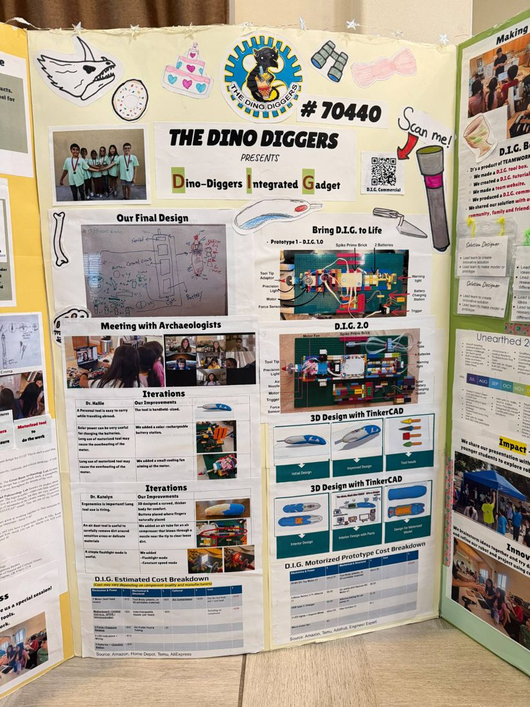
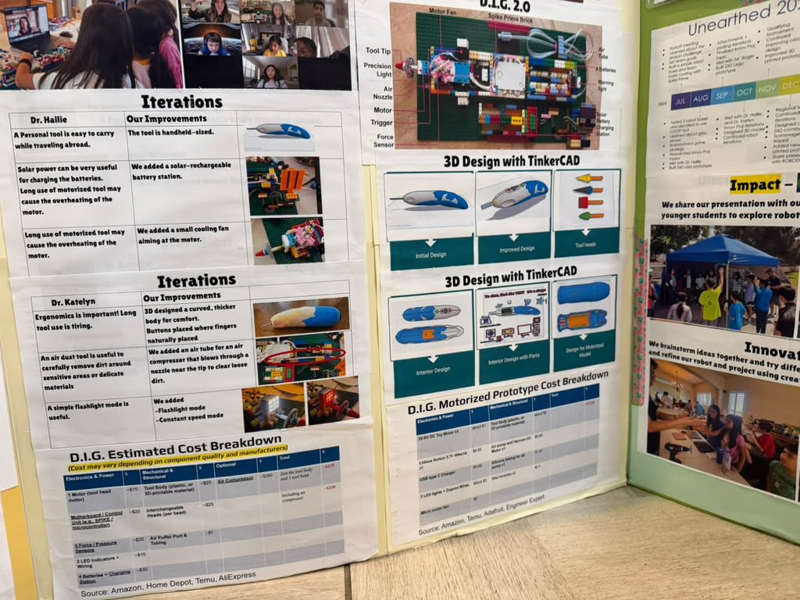

Summary: The plan for the Robot Design tri-fold — what goes in each panel, which of our photographs fills each slot, and what still has to be measured before it can be printed. It is dressed to match our own Innovation Project board, and borrows its structure from the Dino Diggers board (team 70440).
Sources: raw/source-docs/robot-design-2026-10/ (nine photographs, October 2026 — our robot, our own Innovation Project board, and two of the Dino Diggers board); wiki/match-strategy.md; wiki/driving-base.md; raw/bioglow/fll-future-3-8-judging-rubric.pdf
Last updated: 2026-11-14

Open the layout full size · regenerate with python3 scripts/make_board.py
It is drawn at 48 × 36 inches with wings 12 in, centre 24 in — the real board has side panels 12.75 in and a centre panel 22.5 in, so the SVG is slightly off — so every box on it is a real size. Print at 100% and the boxes are the boxes.
The Innovation Project board already exists and already works — Backyard Biodiversity: Tiny Heroes, Big Impact. Two boards standing next to each other at a tournament should look like they came from the same team, so the Robot Design board borrows its whole visual language:

| From our board | On the robot board |
|---|---|
| A black board, with everything sitting on it as a card | Same — the panels are black, not cream |
| Cream banner headings in dark green display type | Every section heading |
| A yellow numbered badge — 1. 2. 3. | Six sections, numbered in reading order |
| A one-line kicker under each heading | Every banner says what its section is for |
| White cards outlined in green | Every block of text and every photo |
| Yellow for anything still to do | The two callouts |
| Leaf sprigs either side of a heading | Same sprig, drawn in code |
Their board is an Innovation Project board, not a robot one, but the shape of it is what makes it work, and that transfers:
| What they do | Why it works |
|---|---|
| A title block you can read across a room | A judge decides whether to walk over from ten feet away |
| Two-column iteration tables — what we learned beside what we changed | It proves a loop happened. A list of features does not |
| Every expert conversation shown with a photo | "We met an archaeologist" is a claim; the screenshot is evidence |
| A costed parts table | Nobody expects it, so it reads as serious |
| A QR code to a video | The board cannot move; the video can |
| Hand-drawn doodles around the edges | It still looks like children made it, which it should |


The one thing not to copy: the density. Theirs is packed to the edges because they had a full season of evidence. Ours has five weeks. A half-full board of real numbers beats a full one of filler.
The board exists for the 5-minute presentation, which the judges score on the Engineering Design Rubric (10 rows in four areas; rows marked ⚙ also count toward Core Values, which is 25% of the Champion's score). So every section answers one rubric row, and each section header on the page carries its row number. One board, two folds, three panels. The board is a 36 in × 48 in tri-fold: side panels 12.75 in wide, centre panel 22.5 in wide (supplier's dimensions, 14 Nov 2026), so the page uses that 12.75 : 22.5 : 12.75 split.
Page: robot-design-board.html is the source of truth for the layout and prints at 48 × 36 in. The SVG above shows the earlier six-section layout and has not been redrawn.
| # | Section | Rubric row | State |
|---|---|---|---|
| 1 | Our Mission Strategy | 3 · clear strategy guiding design | Filled: the annotated mat-routes image and the three sequences with roles and points. The short bullets on rank = average and the 40% rule were removed from the board on 14 Nov (coach); they remain in How We Test and match strategy |
| # | Section | Rubric row | State |
|---|---|---|---|
| 2 | Our Final Design — robot, Tool Strategy and Our Code | 4 · custom builds · 5 ⚙ · custom coding | Filled: two final-build photos across the full row; Tool Strategy table and Our Code (three programs, below) side by side. Placeholder: programs for sequences 2 and 3, how a program is chosen, a code screenshot |
| 3 | Options We Explored | 6 · multiple options per role tool | Filled from the iterations, by tool. Placeholder: grand-tree options, photos of rejected designs |
| 4 | How We Test | 7 · clear testing process, documented | Filled: reliability tests, 40% rule, readiness checks, scored rounds; score chart for 25 Oct, 1 Nov, 8 Nov. Placeholder: the testing log (per-tool reliability) |
| 5 | What Testing Changed | 8 ⚙ · uses results to improve | Filled: all five versions with larger photos and one combined "went wrong → changed" column, plus test → change. Placeholder: what the 85 on 8 Nov taught us |
| # | Section | Rubric row | State |
|---|---|---|---|
| 6 | How We Practise | 1 · guided missions, build/code resources | Part filled (field built, five run-throughs, three identical bases). Placeholder: which guided missions and resources we used |
| 7 | What We Found To Improve | 2 ⚙ · areas to improve in the provided tools | Filled: what we found → design requirement (low/wide/heavy, place don't throw, release exactly 3, sticky wheels, forgiving tool, under 8 in.) |
| 8 | How We Play Together | 9 ⚙ · cooperation between roles and with another team | Roles and hand-offs filled. Placeholder: partner-team plan — not agreed yet |
| 9 | Everyone Contributes | 10 ⚙ · all members contribute | Filled from the record (rotation, role picks, built the field together). Placeholder: who built or coded what, by name, on the printed board only |
Sequences 2 and 3 were not described, so no program is claimed for them. The robot has no gyro and counts wheel rotations (source: driving base).
A button on the page starts a 5:00 clock that lights up each part of the board in turn, one minute each (coach, 14 Nov 2026):
| Min | Part | Panel | Sections |
|---|---|---|---|
| 1 | Our Strategy | 1 | 1 · Our Mission Strategy |
| 2 | Final Design | 2 | 2 · Our Final Design (robot, tool strategy, code) |
| 3 | Iteration | 2 | 3 · Options, 4 · How We Test, 5 · What Testing Changed |
| 4 | Identify | 3 | 6 · How We Practise, 7 · What We Found To Improve |
| 5 | Communicate | 3 | 8 · How We Play Together, 9 · Everyone Contributes |
Each segment has a speaker box (saved only in the viewer's browser, so no child's name is published). Pressing a segment jumps to it. To confirm: the request said iteration is "#2, #3, #4"; on the current numbering #2 is Final Design and the iteration sections are #3–#5, so that is what the clock uses.
The sequence is the argument; the robot is only how it gets delivered. Three sequences, because three is how many can run without queueing for one robot — see match strategy and season journal Week 11.
| Route | Why | |
|---|---|---|
| 1 · the park route | Young Forest → Nest → back to base | Roll in 3 tokens = 60. Roll in a 4th = 40 extra — the queen gets knocked out. Nest = 30. Then drive back to the technician base and take the bottom attachment off. Technician, driver and specialist work together (coach, 8 Nov 2026) |
| 2 · the cycle route | Base → Cave Waterfall → back to base | The Technician loads the keystones, removes the mesher and tells the Driver. The Driver drives to the cave waterfall; the Specialist works the grand tree to open the top of the waterfall; keystones are dropped in. The Driver drives back to the technician base, the Technician refits the bottom part, and the robot grabs the tokens to Central Haven (coach, 8 Nov 2026) |
| 3 · the Operator tool | Grand Tree → Hollow Tree → Cave Waterfall | Deliver the resource token; kicking it in is 5. The Specialist spins the grand tree toward the hollow tree: resource into the canopy chamber 10, keystone species into the hollow tree 20. Do it again for another 20. The Specialist spins the grand tree once more to move the top blocking the cave waterfall, so the Technician and Driver can get there and the Specialist releases the token. Two resources up top: 100 (coach, 8 Nov 2026) |
Sequences 1 and 2 are the two sides of the central tension — park the tokens, or cycle them — and running both is the refusal to choose that the team made in Week 6 when they split the grand tree. Sequence 3 costs the driving base nothing, because it is somebody else's hands.
Part one: the robot we are taking. The v5 build — the v4 chassis cut down to 7 inches — shown from the side and at the field, with the four things that make it the one we kept — one chassis with both motor types and a gear take-off, meshers, three identical bases, and small-light-sticky.
Part two: the five versions, in four columns — the robot · what we built · what went wrong · what we changed — each with its own photographs, and v3, v4 and v5 with two photos each. Dates on every row, and the 210 on v2, so each version reads as an event rather than a label. Full write-up in robot evolution.
The run data is not on the board any more. Tries, worked, seconds and points belong in the kids' notebook and in what they say out loud; a table of empty cells on a tri-fold is worse than no table.
The four roles with names against them, the team photograph, a dated timeline of twenty-seven Sundays from the field being built to the 30 January event, and a box for what is still wrong with the robot.
| Still needed | |
|---|---|
| ⬜ | Timed runs. Not for the board — for the notebook, and for the sentence "it worked 11 times in 15" |
| ⬜ | Names against the four roles — unassigned since Week 6 |
| ⬜ | The waterfall loop time — one number, and it picks which sequence we run |
| ✅ | Five real iterations with dates — done, from robot evolution |
| ✅ | Robot photos — v1 to v5 are on the board; the final-design photos are now the 7-inch v5 |
| ⬜ | The slanted ramp photographed close up and working — the v5 photos show it fitted but not firing. Also confirm the v5 text: the dictation said "RAM at the back" and "a Lego piece box"; this board says RAM at back as dictated, probably a ramp |
| ⬜ | The QR code — python3 scripts/make_qr.py "<run video URL>" "Watch a run" --out run |
The numbers are the whole board. "Eleven of fifteen tries" is worth more than any sentence on it. "It almost always works" is worth nothing, and a judge has heard it from every team before you.
Dictated on 8 Nov 2026 and put on the board as written:
The v5 photographs (1–2 Nov) show the compact black frame with the brown tube lying across the top; they are read, not labelled by the team.
Sequence 1, 8 Nov update: hollow tree dropped from the route (moved to another mission, see v5). "4 tokens = 40 extra because the queen gets knocked out" is as dictated — which mission pays it, and whether it is 40 on top of the 60, still needs checking against the rule sheet.
Sequence 3, 8 Nov update: the dictated figures (5 + 10 + 20, repeated, "total 100 with two up there", plus a stray "20 from the canopy chamber") do not add up cleanly — 2 × (5+10+20) is 70. Check the split against the rule sheet before it goes on a printed board. The old line that the grand tree "never stops the driving base" no longer holds: the Technician and Driver wait on the Specialist to clear the waterfall.
Sequence 2, 8 Nov update: the "× 50 loops" framing is gone from the card because the dictation describes one run. Whether the 50-cycle pool is still the plan, who "drops" the keystones (driver or specialist — dictated both), and what "the bottom part" is, are unconfirmed. Per-run points were not given.
Interactive version: robot-design-board.html — the same three panels as a page: sequences open by role, version tabs with photos, a compare table, and a journey timeline. Built 14 Nov 2026 from this page.
Final-design photos, 14 Nov 2026: the board now uses two photos supplied by the coach —
robot-final-base.jpg(driving base with the dispenser mounted on top, gears and wheels below, with loose arms and a small geared unit beside it) androbot-final-tools.jpg(the operator tools: a black Technic arm with a hooked end and a black claw piece, and a stacked tower with a clear tube and a chute). Captions say only what the photos show; which tool does which mission, and whether the brown tubes are the "slanted ramp", still needs confirming. The v5 photos stay in the version table (now section 7).Rubric tooltips, 14 Nov 2026: on the page, clicking (or tapping, or tabbing to and pressing Enter on) any "Rubric N" tag shows that row's area, the area's guiding question, the row's wording, the four scoring levels (1–4 points, Exceeds needs a judge's comment) and a note when the row also counts toward Core Values. Wording is copied from the Engineering Design Rubric; the page does not describe what each level looks like because the rubric sheet shows only point values. Tooltips are hidden when printing.
Mission-strategy image, 14 Nov 2026: section 3 now uses the coach's photo of the mat from above with three sets of hand-drawn arrows (blue, purple, red) —
mission-strategy-routes.jpg— in place of the plain map. Colour key (coach, 14 Nov 2026): sequence 1 = red, sequence 2 = purple, sequence 3 = blue. The board shows this as a legend under the image and gives each sequence card a matching coloured left edge. To fit it, the board's print scale was reduced slightly (about 8% smaller text) and one strategy bullet was merged.Removed from the page, 14 Nov 2026 (coach): Our Journey (twenty-seven Sundays), What We Would Do Next and Our Presentation. Panel 3 is now two sections (numbered 8 and 9 after the later renumbering). The speaker boxes and time split in 5-minute mode remain as the place to plan who presents what. The journey and open items are still in season journal and where we stand.
Full rubric popup, 14 Nov 2026: a "Full rubric" button at the top of the page opens the whole Engineering Design Rubric in a popup — intro, four areas, ten rows, the four point columns, the ⚙ Core Values marks and footnote — with an extra column saying which board section answers each row. Close with the button, Esc or a click outside. It does not print.
Numbering, 14 Nov 2026 (coach): Our Final Design (section 4) covers the tool and robot design and the code, so Our Code is no longer its own numbered section; it keeps its rubric tag (row 5). Later sections are renumbered 5–9. "Rubric N" tags are rubric rows and do not change. The rubric popup's "On our board" column and the 5-minute mode text use the new numbers.
Panel change, 14 Nov 2026 (coach): How We Practise and What We Found To Improve moved from panel 1 to the top of panel 3, which is now titled "Identify · Communicate"; panel 1 is "Our strategy". Sections are numbered in reading order (1–9), so the rubric popup's "On our board" column and the 5-minute mode captions use the new numbers.
Board notes removed, 14 Nov 2026 (coach): the "as dictated" notes on the sequence cards no longer appear on the board. The open points are unchanged and still need checking against the rule sheet: who drops the keystones in sequence 2 and what "the bottom part" is; and that sequence 3's dictated parts (5 + 10 + 20, repeated) add to 70 while the stated total is 100.
Third final-design photo, 14 Nov 2026: a tall tower frame — maroon Technic frame with a motor and gear near the top and grey beams standing beside it — cropped from the coach's photo to
robot-final-tower.jpgand added to the same row as the other two final-design photos. The caption says only what is visible ("Tower frame"); what mission it serves has not been recorded.Sequences renumbered, 14 Nov 2026 (coach): on the board, sequence 2 is now the Operator tool (grand tree → hollow tree → waterfall) and is blue; sequence 3 is the cycle route (base → cave waterfall → back to base) and is purple. Sequence 1 (the park route) stays red. This swaps the old order used earlier on this page, in the 8 Nov update notes above, and in match strategy and season journal (where "sequence 2" meant the cycle route). The third final-design photo, the tower frame, is captioned Operator tool (sequence 2).
Sequence 2 (Operator tool) steps, 14 Nov 2026 (coach): the Operator is now on the card. Step 1: the Operator kicks the resource into the grand tree (5). New step 2: the Operator uses the operator grabber tools to pick up keystone species and resources. The Specialist's grand-tree spins, the repeat, and the waterfall hand-off follow as before. Where the grabber step falls in the order was not stated, so it sits straight after the kick.
Sequence 2 roles, 14 Nov 2026 (coach): sequence 2 (the Operator tool) is worked only by the Operator and the Specialist. The Driver and Technician are removed from its card, so the old step "Technician and Driver go to the waterfall" is gone; the last step is now just the Specialist spinning the grand tree to clear the waterfall top and releasing the token. Earlier notes on this page that put the Technician and Driver on this sequence are superseded.
Sequence totals on the board, 14 Nov 2026: each sequence card header now shows its total. Sequence 1: 130 + 20 per invasive species (60 for 3 keystone species + 40 for the 4th + 30 for the nest; the number of invasive species per run is not recorded). Sequence 2 (Operator tool): 100, the coach's stated total for two resources up the grand tree; the listed steps (5, 10 + 20, +20) add to 55 for one pass, so the breakdown behind the 100 still needs checking against the rule sheet. Sequence 3 (cycle route): 5 per pass through the waterfall (rulebook M03 as recorded on match strategy); no total was given because the number of passes per run is not known.
Tower photo correction, 14 Nov 2026 (coach): the tower frame (third final-design photo) is for sequence 3 (the cycle route, purple), not sequence 2, and is marked work in progress on the board. This replaces the earlier caption "Operator tool (sequence 2)".
Code placeholder removed, 14 Nov 2026 (coach): the "Programs for sequences 2 and 3; how a program is chosen; a code screenshot" placeholder is gone from Our Code on the board. Those items are still not documented anywhere: the programs for sequences 2 and 3, how a program is chosen in a match, and a screenshot of the code.
Dispenser wording, 14 Nov 2026 (coach): the Tool Strategy table now says the dispenser "holds 6 keystone, [with the] ability to release one keystone at a time", replacing "releases 3". Other places still say it releases 3 (the "release exactly 3" design requirement in What We Found To Improve, the v2 history row, and match strategy); those describe earlier designs or the 3-per-microbiome scoring and were not changed.
Tool Strategy rows removed, 14 Nov 2026 (coach): "Slanted ramp — shoots keystone at the young forest" and "Grand-tree motor — Specialist: hollow tree, waterfall top" are no longer in the board's Tool Strategy table, which now lists the one chassis, the meshers and the dispenser. The slanted ramp is still described in the v5 history row and in robot evolution.
Slanted ramp row restored, 14 Nov 2026 (coach): "Slanted ramp — shoots keystone at the young forest" is back in the Tool Strategy table, after the dispenser. The grand-tree motor row stays removed.